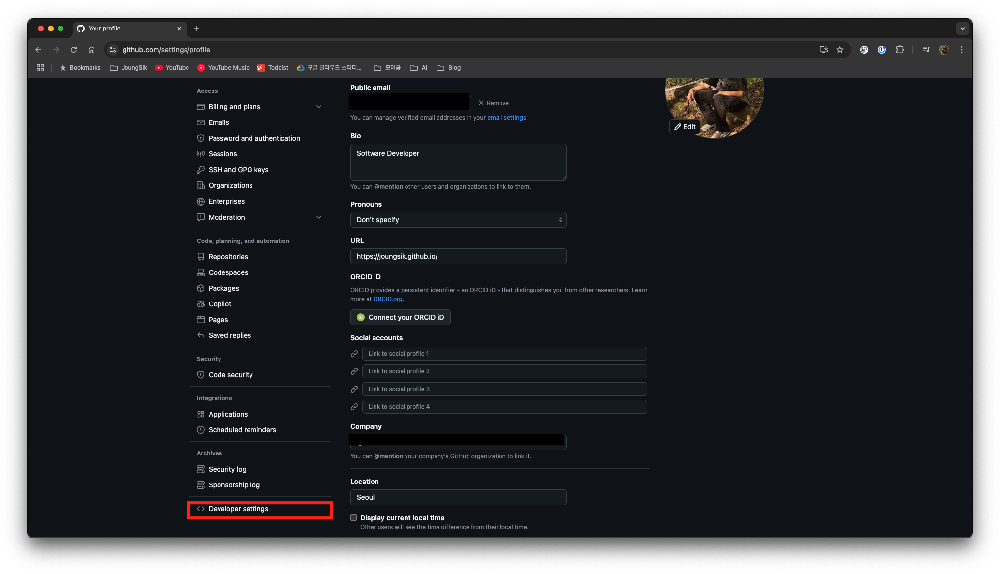
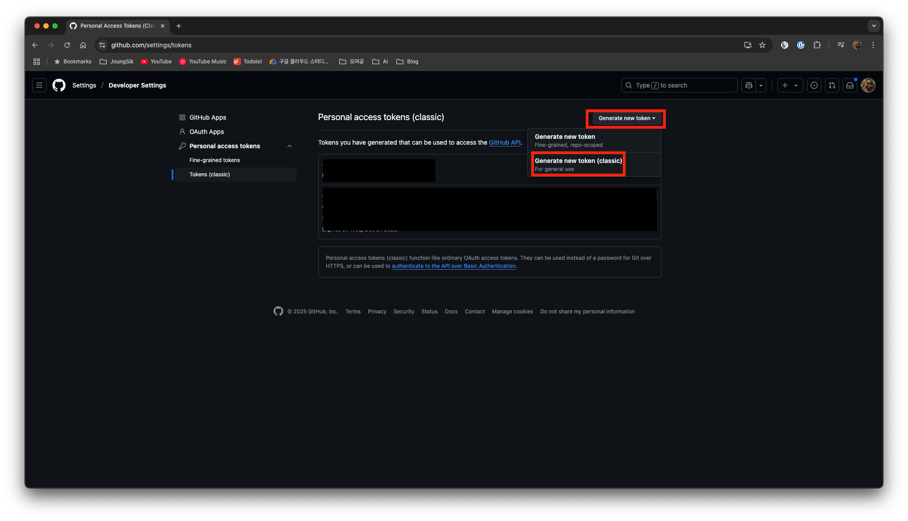
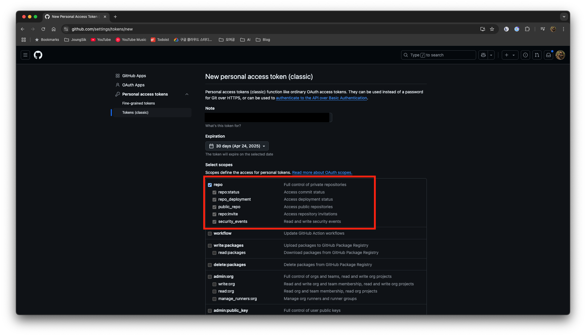
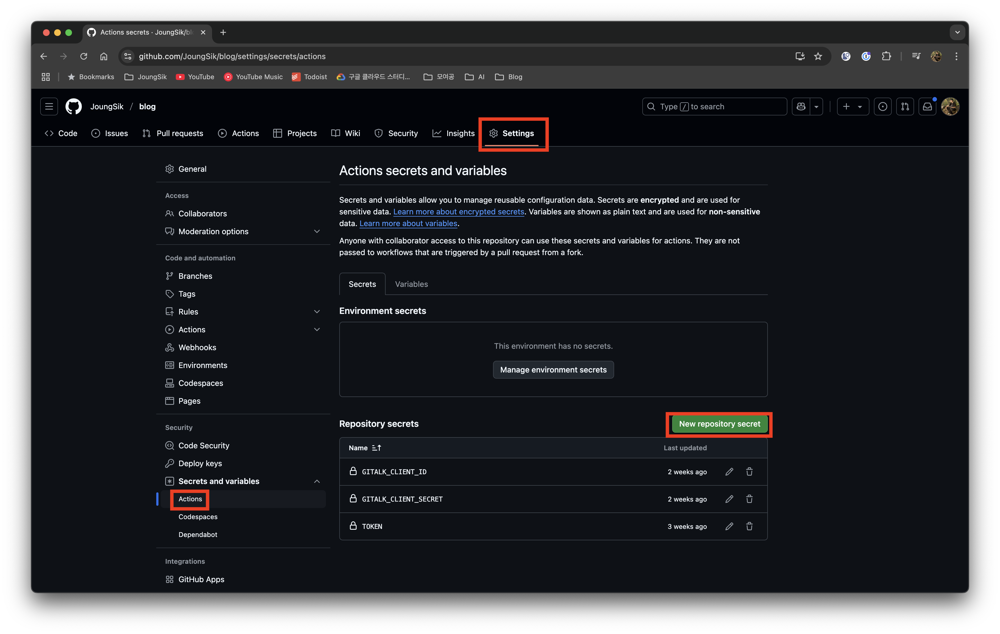
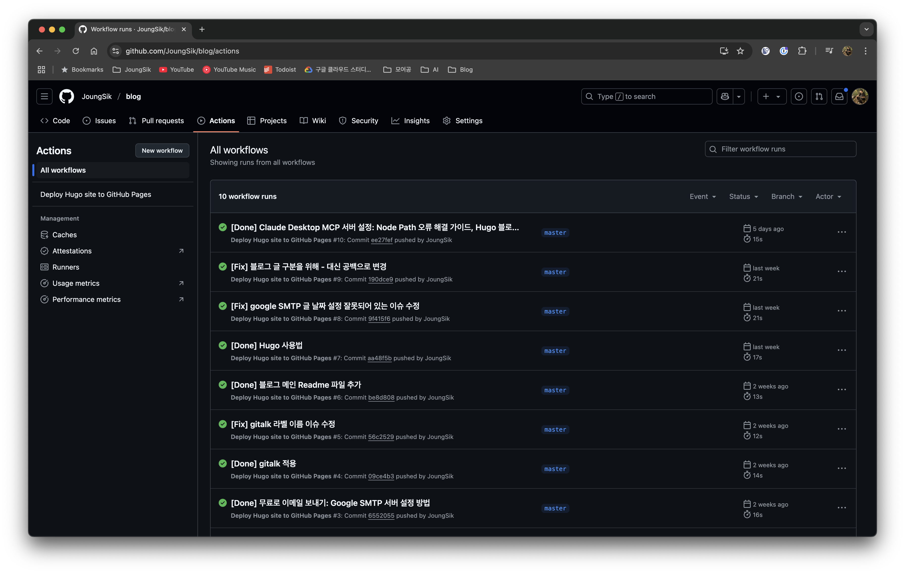
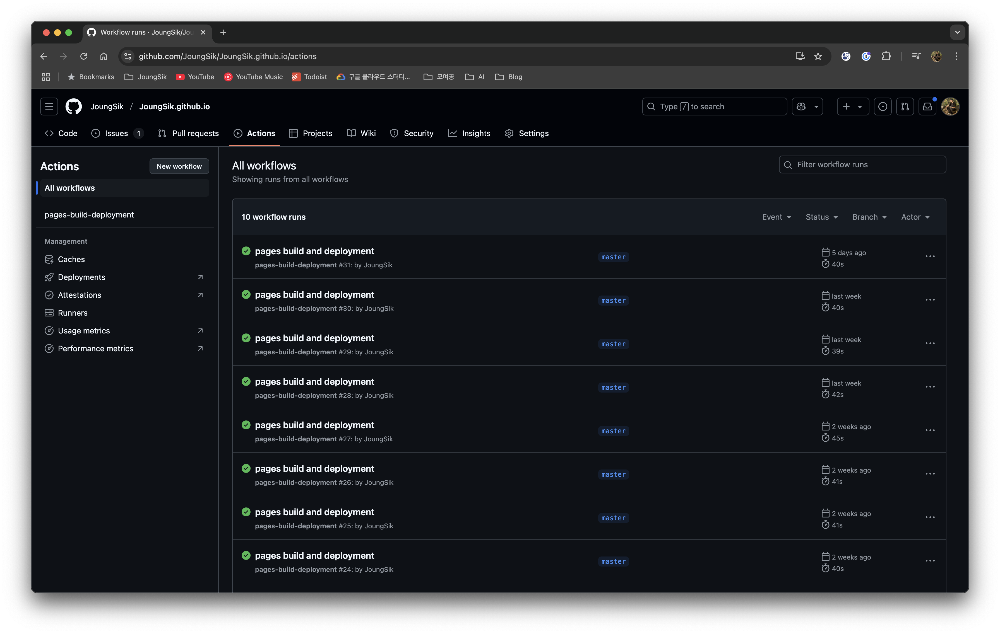
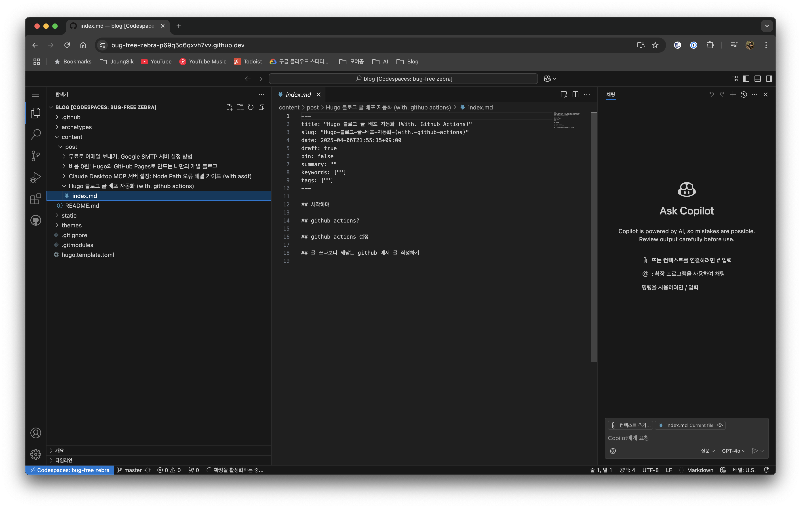

시작하며
이전 글에서 언급했듯이, 저는 GitHub Pages를 이용하여 블로그를 운영하고 있습니다.
이번 글에서는 이전 글에 이어 GitHub Actions를 활용한 블로그 배포 자동화 과정을 소개하려 합니다.
GitHub Actions란?
GitHub Actions는 GitHub 저장소에서 특정 이벤트(예: 코드 푸시)가 발생했을 때 자동으로 실행되는 일련의 작업들을 정의하는 도구입니다. 이러한 작업들은 CI/CD (Continuous Integration/Continuous Deployment) 파이프라인을 구축하는 데 사용될 수 있으며, 코드를 테스트하고, 빌드하고, 배포하는 등의 작업을 자동화할 수 있습니다.
GitHub Actions의 자세한 사용법은 공식 문서를 참고하시는 것이 가장 좋습니다. 이 글에서는 제가 구축한 블로그에 적용한 자동화 방법에 대해 설명합니다.
GitHub Actions 설정
먼저 블로그 프로젝트를 엽니다.
GitHub Actions 워크플로우는 프로젝트 내 .github/workflows 디렉터리에 있는 YAML 파일로 정의됩니다.
저는 .github/workflows/deploy.yml 파일을 생성하여 배포 설정을 관리하고 있습니다.
name: Deploy Hugo site to GitHub Pages
on:
push: # master 브랜치에 push될 때만 실행
branches:
- master
jobs:
deploy:
runs-on: ubuntu-latest
steps:
- name: Checkout blog repo # 현재 저장소의 코드 가져오기
uses: actions/checkout@v3
with:
submodules: true
fetch-depth: 0
- name: Setup Hugo # Hugo 설치
uses: peaceiris/actions-hugo@v2
with:
hugo-version: 'latest' # Hugo 최신 버전 사용 (안정적인 사용을 위해 특정 버전으로 지정하는 것을 권장)
extended: true
- name: Install envsubst # 환경 변수 치환 도구 설치
run: sudo apt-get install gettext-base
- name: Generate hugo.toml from template # 템플릿 파일로부터 hugo.toml 생성
run: |
export GITALK_CLIENT_ID="${{ secrets.GITALK_CLIENT_ID }}"
export GITALK_CLIENT_SECRET="${{ secrets.GITALK_CLIENT_SECRET }}"
envsubst < hugo.template.toml > hugo.toml
- name: Build with Hugo # Hugo로 빌드
run: hugo -t github-style
- name: Checkout destination repo # 배포 대상 저장소 checkout
uses: actions/checkout@v3
with:
repository: ${{ github.actor }}/${{ github.actor }}.github.io
token: ${{ secrets.TOKEN }}
path: .gh-pages
- name: Copy files # 빌드 결과 복사 및 커밋
run: |
rm -rf .gh-pages/*
cp -r public/* .gh-pages/
cd .gh-pages
git config user.name "${{ github.actor }}"
git config user.email "Your Email"
git add .
git diff-index --quiet HEAD || git commit -m "${{ github.event.head_commit.message }}"
git push
이렇게 설정하고 배포에 필요한 TOKEN 값을 설정합니다.
- 설정에서 개발설정에 들어갑니다. 
- 토큰을 생성합니다. 
- repo 권한에 체크합니다. 
- 생성된 값을 블로그 repo의 설정에 추가합니다. 
이후 글 작성 후 push가 되면 자동배포가 되는 것을 볼 수 있습니다.


글 쓰다보니 깨닫는 GitHub에서 글 작성하기
GitHub 저장소에서는 ,를 누르면 Codespace가 열리면서 VS Code가 실행됩니다.
그러면 제가 로컬에서 작업하던 내용을 그대로 작성할 수 있게 됩니다.
